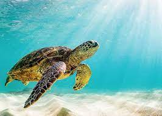
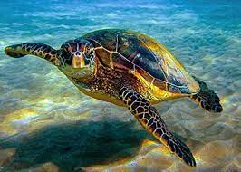

Turtle Categories

Green Turtle

Hawksbill Turtle

| Category | Description |
|---|---|
| Green turtle | Green turtles are found worldwide primarily in subtropical and temperate regions of the Atlantic, Pacific, and Indian Oceans, and in the Mediterranean Sea. |
| Loggerhead Turtle | Loggerhead turtles are found worldwide primarily in subtropical and temperate regions of the Atlantic, Pacific, and Indian Oceans, and in the Mediterranean Sea. In the Atlantic, the loggerhead turtle's range extends from Newfoundland to Argentina. |
| Hawksbill Turtle | They are primarily found in tropical and subtropical regions, inhabiting coral reefs, rocky areas, and coastal habitats. |
| Leatherback Turtle | Turtles that live in freshwater habitats such as oceans. |
| Oliver Ridley Turtle | Olive ridley sea turtles inhabit various oceans. |